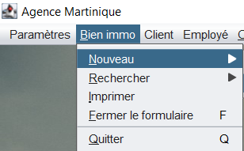
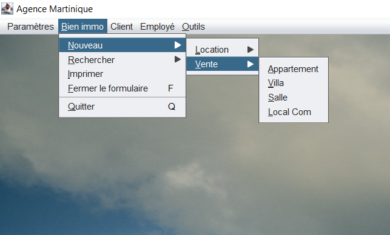
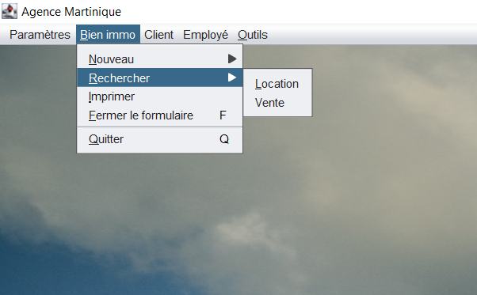

Fonctionnalités de l'application
-
Création d'une nouvelle location
L'application Agence Martinique permer créer une nouvelle location. Pour se faire allez dans la barre de menu au dessus de votre écran puis sur "Nouveau". (voir image ci-dessous).
Une fois dans "Nouveau" une liste déroulante vous donnera plusieurs options, sélectionnez alors "Location" puis choisissez votre type de bien immobilier avant de remplir un formulaire (voir image ci-dessous).
-
Création d'une nouvelle vente
Tout comme il est possible de créer une nouvelle location, notre application vous permet de ce crééer une nouvelle vente. Ainsi, allez dans la barre de menu au dessus de votre écran puis sur "Nouveau". (voir image ci-dessous).
Une fois dans "Nouveau" une liste déroulante vous donnera plusieurs options. Sélectionnez alors "Vente" puis choisissez votre type de bien immobilier avant de remplir un formulaire (voir image ci-dessous).
 -
Rechercher des biens immobiliers
Vous pouvez également rechercher des biens immobiliers grâce à notre option de recherche. Allez dans le menu au dessus de votre écran puis sur "Rechercher" et enfin, tappez ce que vous voulez rechercher. (voir image ci-dessous).
 -
Exportation d'informations
Grâce à notre option d'exportation, vous pouvez exporter le récapitulatif d'une création d'une nouvelle affaire dans un autre fichier au format .csv (tableur). Vous aurez besoin d'aller dans la barre de menu et de selectionner l'option nommée "Exporter". (voir image ci-dessous).
-
Paramétrage de l'application
Si les paramètres actuels de l'application ne vous plaise pas, vous avez également à disposition une option de paramétrage vous permettant ainsi de modifier certains aspect de l'application pour que celle-ci soit à votre convenance. Il vous faudra dans ce cas allez dans la barre de menu au dessus de votre écran puis sur "Paramètre". (voir image ci-dessous).